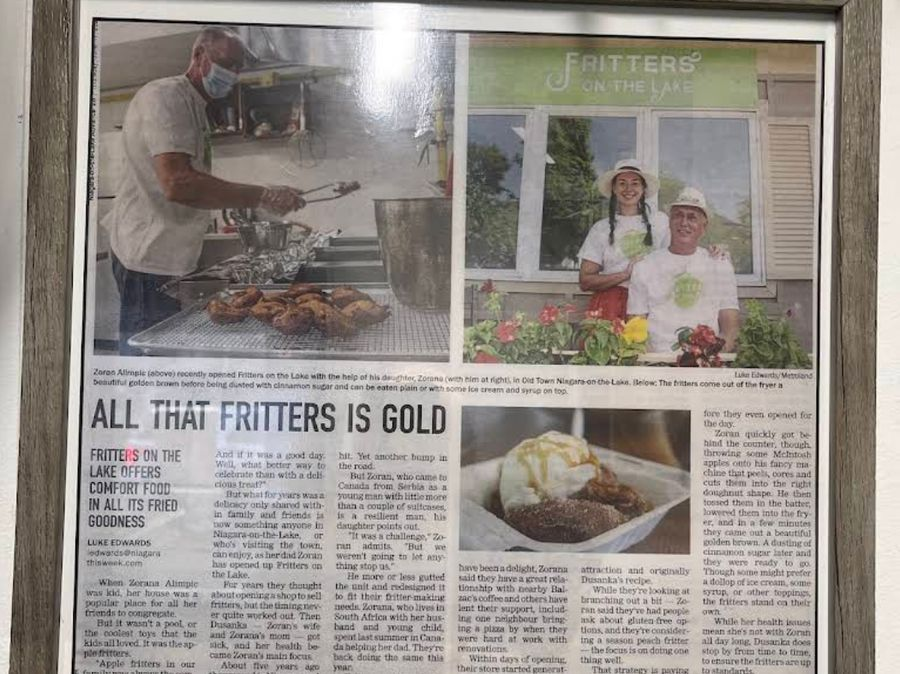
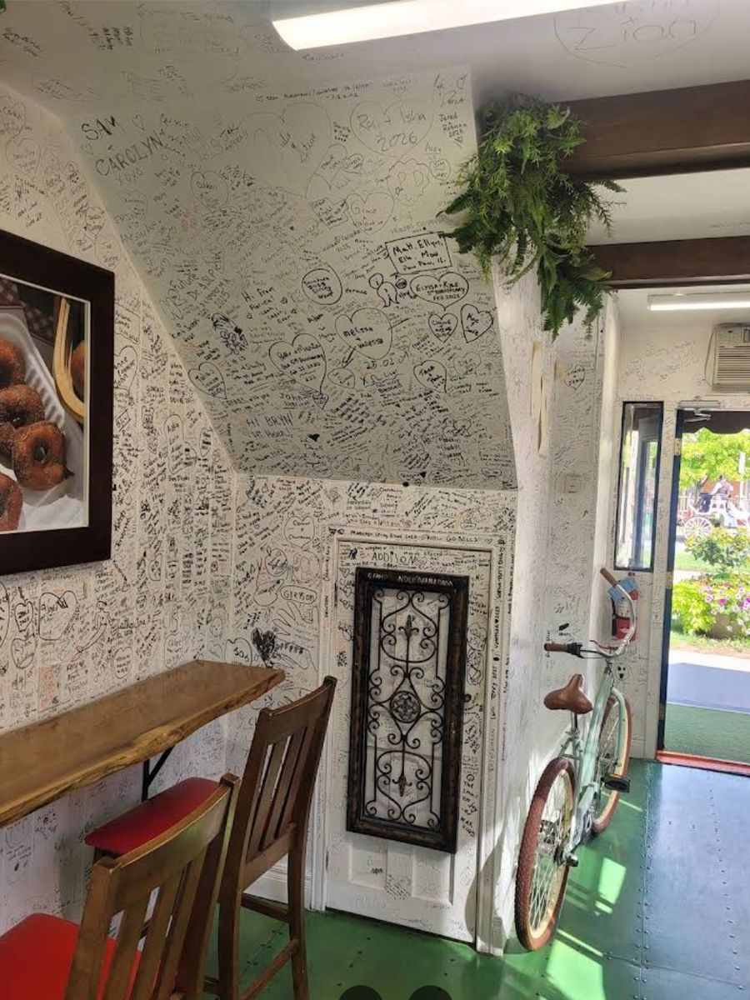

Our story
Opened by a father, on his wife’s recipe
Zoran Alimpić came to Canada from Serbia as a young man with a couple of suitcases. Apple fritters were the comfort food at home — his daughter Zorana grew up with friends coming over for them — and his wife Dušanka kept the recipe. They moved to Niagara about five years before the shop opened, and in June 2021 Fritters on the Lake started frying on King Street.
Dušanka’s health means she is not at the counter all day, but she stops by from time to time to check that the fritters are up to standard. Zorana lives in South Africa with her own family and came back for the summers to help; much of what appears on our Instagram is written by her.
The shop drew a crowd within days of opening. Niagara This Week sent reporter Luke Edwards to write about it, and the Shaw Festival company stopped by early on. Neighbours brought flowers, and one brought a pizza during the renovation. Gift cards are available at the counter.


What people say
“The atmosphere had such a warm, friendly vibe, and the service was fantastic.”
Google review
“Delicious fresh and hot apple fritters with ice cream and maple and caramel. Friendly staff. We really enjoyed!”
Olesya K., Google review
“Small portion and the sugar topping overpowers the canned apple filling flavour.”
Google review — not everyone loves it